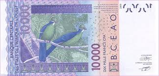

<!DOCTYPE html>
<html lang="uk">
<meta charset="utf-8">
<meta name="viewport" content="width=device-width, initial-scale=1.0">
<link rel="stylesheet" href="/css/styles.css">
<!--========== HTML ==========-->
<main   <div style="background-color:pink;  font-size:80%;"             ><h1>Банк "По-нашому"</h1>
<b>Онлайн обмін валют</b> <br><br>

Уведіть суму (грн) <br>
 <br>

    <input id="input1">    <br>
Курс західно-африканського франка <br><br>
<b>0.06</b> <br><br>
 Ви можете купити  <output id="output1"> 	</output> західно-афр. франків   <br>
 
  <br>
									

    <button  style="background-color:brown"    onclick="task1()"> Обчислити </button> <br>
	
	<button     style="background-color:brown"onclick="task1()"> Очистити </button> 
	
	<button       style="background-color:brown" onclick="task1()"> Про нас  </button> 
	
	

</main>
<!--====== Java Script =======-->
<script> function task1() {

let gryvna = Number(input1.value);

let africa = gryvna / 0.06;

output1.value = africa.toFixed(2);


} </script>


<!--============= HTML ================

1. <h1>…</h1>		заголовок 1 рівня (h1,h2,h3)
2. <br>				розрив рядка
3. <b>…</b>			потовщений текст
4. 			зображення		
									
									
5. <input type="checkbox">	прапорець				<input type="checkbox" id="checkbox1">
6. <input type="radio">		перемикач				<input type="radio" id="radio1" name="group1">
7. <textarea>…</textarea>	багаторядковий текст	<textarea id="textarea1">

8. <label>…</label>		текстова мітка
9. <div>…</div>			блочний елемент
10.<span>…</span>		лінійний елемент

================= CSS =================

Приклад:	<div style="background-color:red; border-top:2px dotted blue; font-size:80%;">

11. font-size: 150%;           	(14px)		розмір  (відсотки / пікселі)
12. color: green;                			колір  (назва / номер)
13. background-color: yellow;  				колір тла  (заливка)
14. text-align: left;     (center) (right)	вирівнювання

15. width: 50%;                	(250px)		ширина
16. float: left;               	(right)		обтікання
17. border-radius: 15px;					радіус округлення меж

18. border: 3px solid black;				межі (товщина стиль колір)
19. border-top: 5px double red;   			межа зверху
20. border-bottom: 2px dashed red;			межа знизу

-->